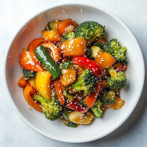
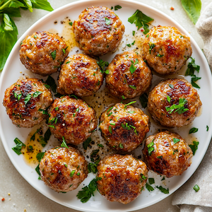

Cooking Odyssey
Savor the Past, Cook for the Future
☰
Nutrition Facts
Vintage Inspirations
⌄
Vintage Recipe Cards
Food Timeline History
About
Contacts
Sign-up
Cosmic Veggie Stir-Fry

Space Traveler's Chicken Wrap
Martian Meatballs

Galactic Greek Salad
Interstellar Salmon Bowl
Planetary Pasta Primavera